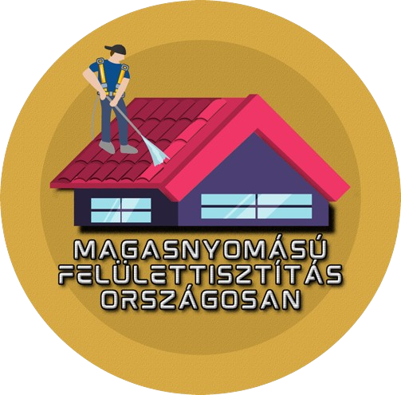
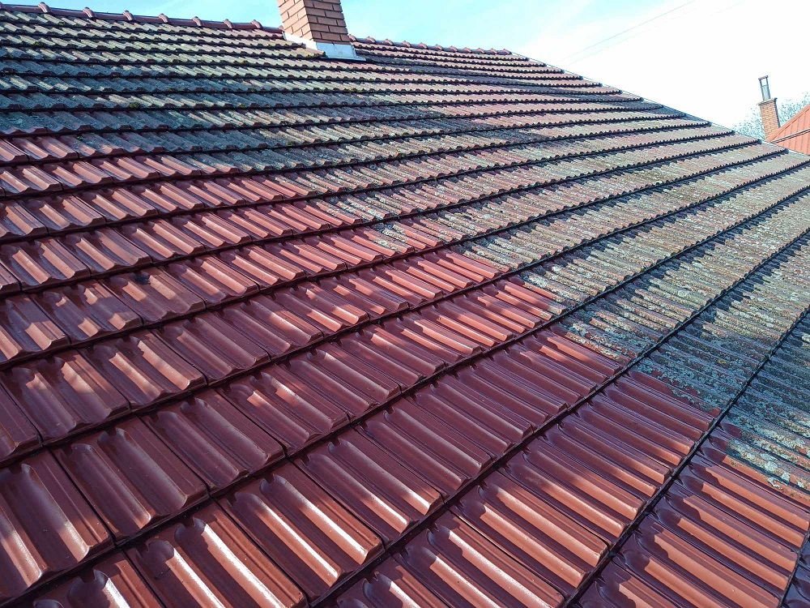
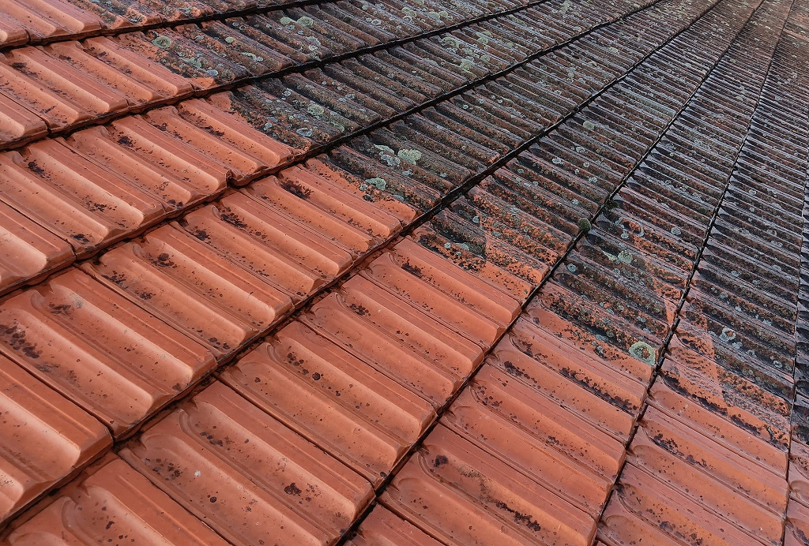

Magasnyomású Felülettisztítás Országosan
Hívjon most: (30) 687 2162
Szolgáltatások
✔️ TETŐMOSÁS (TELJES ERESZCSATORNA TISZTÍTÁSSAL)
✔️ HOMLOKZAT TISZTÍTÁS (VEGYSZERES)
✔️ EGYÉB FELÜLETEK TISZTÍTÁSA
✔️ INGYENES FELMÉRÉS, ÁRAJÁNLAT
Eredmények


×